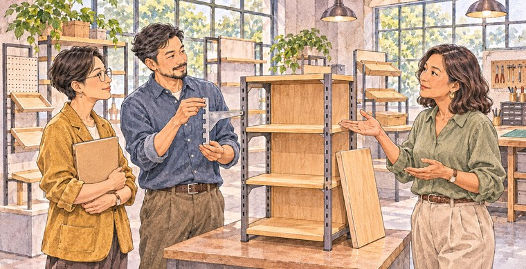

STR-14 · 香港 · 10–15分鐘 · 股權式市場進入模式 · 本地能力 · 共同控制
全資經營，還是透過合營共享本地知識？

為海外營運作準備
2026年11月4日，香港特區政府在一份答覆中說明，內地企業出海專班如何支援準備經香港拓展海外業務的中國內地企業，包括協助它們聯繫海外合作夥伴。答覆並無建議採用特定的股權架構。
下述企業、目的地和提案均屬虛構。這項政策措施只作背景，並不代表這家虛構的香港企業獲得資助或認可。
課堂決定
虛構課堂情境。一家香港模組化店舖陳列系統製造商，計劃在海外設立小型組裝及維修業務。東主有能力為任何一項方案出資，而不影響現有承諾。兩個方案服務同一批目標客戶，可於同日開業，亦符合本練習設定的目的地市場准入規則。兩項方案均未獲接納。
方案 A 是成立一家全資公司。方案 B 是成立一家新的股權合營企業，由香港製造商持有60%股權，當地一家已有營運基礎的服務公司則持有40%。兩個方案各需1.2百萬港元初始資金，用於籌設業務及執行已議定的首年營運計劃。在 B 方案下，雙方按上述持股比例出資。個案不假設再有資金投入；日後如要擴充，須另作決定。
無論採用哪個方案，製造商都保留現有設計。在 B 方案下，即使製造商持有60%股權，擬議協議仍規定，年度預算及更改產品系列均須兩名股東同意。A 方案則容許製造商自行決定這些事項。當地公司表示，除了派員參與，還會提供在當地營運的實務知識。當中哪一部分確實需要透過股權合作才能取得？
| 擬議條款 | A · 全資經營 | B · 股權合營企業 |
|---|
| 香港製造商的初始出資 | HK$1,200,000 | HK$720,000 |
| 當地合作夥伴的初始出資 | 無 | HK$480,000 |
| 新業務的股權 | 製造商100% | 製造商60%；合作夥伴40% |
| 預算及產品系列的決策權 | 由製造商決定 | 須獲雙方股東同意 |
| 營運盈餘或虧損 | 全部盈虧歸製造商 | 模型按60:40分攤盈虧 |
持股比例不是股息預測。個案沒有提供營業收入、營業利潤、未來所需資金或退出價值。這些是課堂個案的擬議條款，並非法律上的預設規則。
你的決定你會暫時選擇 A 還是 B？說明你如何在控制權與出資之間取捨，並指出在提出讓對方持股之前，你會查證對方聲稱可提供的哪一項本地支援。
第二輪 · 多了一項資料
盡職審查把對方可提供的支援分為兩類。無論採用哪個方案，都可透過獨立供應商取得註冊支援、薪酬行政服務及合適的場地租約，相關費用已全數計入。要取得這些服務，無須讓這家當地公司持股。
當地公司亦有一支人員穩定的團隊，具備到客戶現場診斷陳列系統問題的經驗。經客戶同意後進行的查證，證實團隊曾多次與這些客戶合作，並熟悉他們的日常安裝流程。在 B 方案下，當地公司承諾按已有資金支持的計劃派這支團隊參與營運，並培訓雙方共同聘用的員工。當地公司的管理層希望長期持股，不願另訂獨立服務合約提供這支團隊的服務。
A 方案仍然可行：已有資金支持的招聘及培訓計劃，可讓製造商建立自己的服務能力。但這樣做無法取得對方現有的客戶關係，而建立同等互信需時多久，仍未可知。兩個方案都沒有客戶訂單承諾。B 方案仍須由雙方共同決定預算及產品系列；查證結果並不能證明日後合作順利。你不能假設 A 方案可以同樣的成本取得合作夥伴所能提供的一切。
你的決定你現在會建議採用哪種股權安排？先區分可外購的服務和合作夥伴帶來的能力，再指出哪一項共同決策需要訂明規則，以及未能議定可接受條款時的後備方案。
不要只憑一句含糊的說法便讓對方持股
「本地知識」涵蓋不同事物。在本個案中，日常行政服務可以外購。經驗豐富的團隊和既有合作關係則不同：按擬議方案，要調派這支團隊並讓雙方共同學習，便須作出股權承諾。這不表示每個當地合作夥伴都有獨到知識，也不表示合作關係可以像設備一樣擁有。
出資較少，所佔權益也較少
B 方案讓製造商少出資480,000港元，即1.2百萬港元減去720,000港元。這筆差額由合作夥伴出資，並非新業務所需的初始資金總額有所減少。製造商也要與合作夥伴分攤盈虧。兩個方案的盈虧均屬未知，單憑這些數字，無法比較其中一個結果的六成與另一個結果的100%孰優孰劣。
合作夥伴的經驗或有助於落實計劃，但沒有盈利預測可證明有這項好處。採用 A 方案，製造商可自行作出策略決定，獨享收益、獨力承擔虧損，同時負責建立所需能力。採用 B 方案，雙方分擔出資承諾，並由合作夥伴帶來一支團隊，但營運也有賴雙方持續合作。
讓共同控制切實可行
若採用 B 方案，要問清楚雙方對產品系列意見不合時如何解決、預算有爭議期間誰可以採取行動，以及承諾調派的團隊若被撤回，應如何處理。除了訂明預期表現，也要爭取可行的安排，讓雙方能夠學習，並維持業務運作。這些是有待商議的條款，並非已取得的權利。
如果自主控制及自行累積知識，比即時獲得這支團隊的支援更重要，選 A 有理據。如果雙方能力互補，值得共享股權，而且共同決策切實可行，選 B 也有理據。若無法就必要的保障條款達成協議，A 仍是有資金支持的後備方案；對方並無提出成本較低而不涉及股權的 B 方案。
教師說明
先投票，再公布查證結果。請各組把對方可提供的支援分為可外購的服務、由人員掌握的能力，以及管治責任。最後請各組提出股權安排建議，並訂出一項對結果有實質影響的決策規則，而不是列出一串假設可無代價取得的保障。
STR-02 討論分銷商買入貨品再轉售；STR-06 討論競爭對手共用設施；STR-12 討論如何管治為特定客戶而作的投資。本個案要選擇海外營運實體的股權安排。不要把討論變成對國籍的刻板印象，不要認定持有過半股權就必然可以單方面控制，也不要在沒有預測數據的情況下計算利潤。個案已設定兩種進入方式均合法，資金上亦可行；實際訂立協議時，須按相關司法管轄區的情況徵詢專業意見。
第二輪
盡職審查把對方可提供的支援分為兩類。無論採用哪個方案，都可透過獨立供應商取得註冊支援、薪酬行政服務及合適的場地租約，相關費用已全數計入。要取得這些服務，無須讓這家當地公司持股。
當地公司亦有一支人員穩定的團隊，具備到客戶現場診斷陳列系統問題的經驗。經客戶同意後進行的查證，證實團隊曾多次與這些客戶合作，並熟悉他們的日常安裝流程。在 B 方案下，當地公司承諾按已有資金支持的計劃派這支團隊參與營運，並培訓雙方共同聘用的員工。當地公司的管理層希望長期持股，不願另訂獨立服務合約提供這支團隊的服務。
A 方案仍然可行：已有資金支持的招聘及培訓計劃，可讓製造商建立自己的服務能力。但這樣做無法取得對方現有的客戶關係，而建立同等互信需時多久，仍未可知。兩個方案都沒有客戶訂單承諾。B 方案仍須由雙方共同決定預算及產品系列；查證結果並不能證明日後合作順利。你不能假設 A 方案可以同樣的成本取得合作夥伴所能提供的一切。
你的決定你現在會建議採用哪種股權安排？先區分可外購的服務和合作夥伴帶來的能力，再指出哪一項共同決策需要訂明規則，以及未能議定可接受條款時的後備方案。